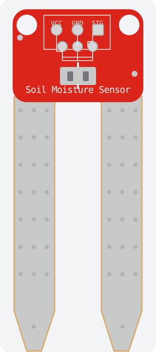

REFERENCIALSENSOR 01
Humedad del suelo
YL-69 · sonda resistiva + módulo YL-38
VARIABLEHumedad del sustrato
lectura analógica relativa
lectura analógica relativa
¿Para qué? Identificar si la zona de raíces se seca y orientar la revisión del riego.
↳Ejemplo Compara suelo seco y húmedo antes de fijar un umbral.
SEÑAL analógica (AO) · PIN A0 recomendado · DO → D4 opcional*(Arduwiki, s. f.)(Arduino, 2025)(HiBit, 2025)
! Calibra en tu sustrato y energiza la sonda solo al medir para reducir corrosión. *DO solo con módulo comparador.